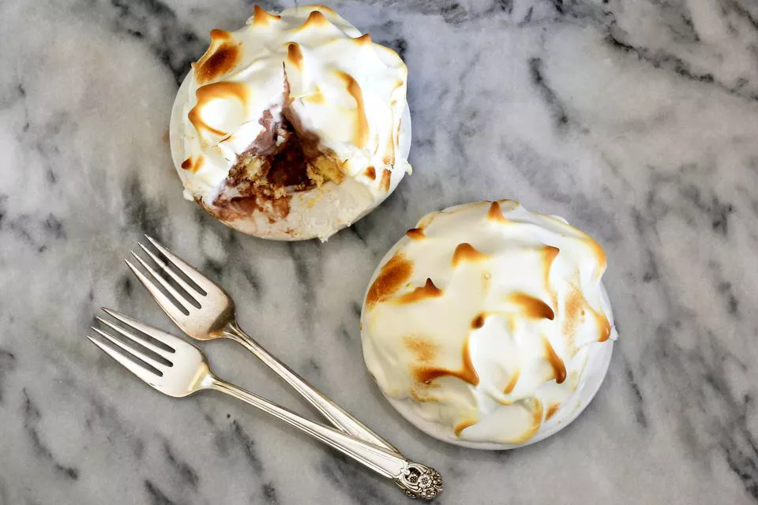

Baked Alaska Dessert

Baked Alaska is an incredible Christmas dessert. With cake, ice cream, and a light meringue topping, what's not
to love? This versatile recipe makes one large cake, or several small, individual desserts. Here's another
entertaining trick: you can do like the professionals and torch the meringue tableside.
Ingredients
- 4 cups ice cream, softened, about 2 pints
- 1 (1-layer) sponge cake, yellow, white, or chocolate, about 9 x 9-inches
- 1/4 cup seedless raspberry, or strawberry jam
- 5 large egg whites, room temperature
- 2/3 cup superfine sugar
Steps
- Gather the ingredients.
- Line an 8 x 4-inch loaf pan completely with plastic wrap, leaving some overhang on the longer sides to use
as handles to pull the ice cream out once solid. Add the softened ice cream to the pan, spreading it in a
smooth layer with a silicone spatula. Freeze until very solid, at least 6 hours or up to overnight.
If using different flavors/colors of ice cream for a layered effect, freeze each layer until completely
solid before adding the next layer.
- Cut the cake horizontally so that it's 1-inch thick. Then cut the cake again so it's an 8 1/2 x 4 1/2-inch
rectangle. Place the cake on an oven-safe platter or tray.
- Warm the jam and brush it over the cake. Let the jam cool completely before proceeding.
- Pull the ice cream from the loaf pan by the plastic wrap handles. Discard the plastic. Place the brick of
ice cream on top of raspberry coating on the sponge cake. Freeze the cake and ice cream until very firm,
about 30 minutes.
Meanwhile, position a rack in the center of the oven and heat to 450 F.
- In a large bowl, beat the egg whites until foamy. Gradually add the sugar and beat until stiff peaks form.
- Spread the meringue over the ice cream and the cake, taking care to seal it completely, so no ice cream or
cake is exposed. There should be about a 1/2-inch thick layer of meringue over the ice cream and cake.
- Bake until the meringue is light brown, about 5 to 7 minutes. Serve and enjoy!
Return to home page